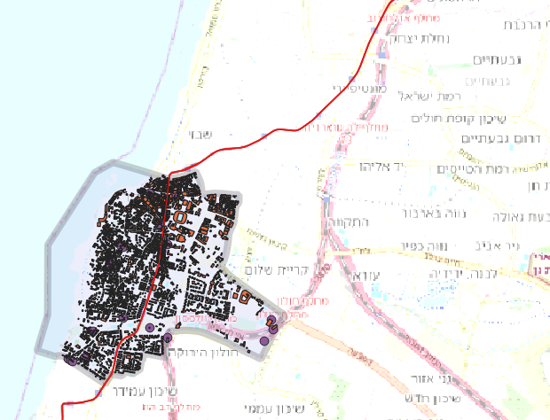
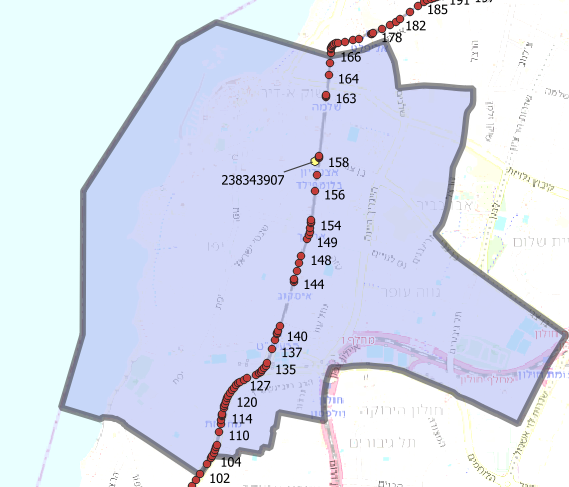

11. Example of accessibility computations for the Gesher theater, Yafo¶
Let us assess the PT and Car accessibility for the Yaffo part bounded by Heinrich Heine and Shlabim streets from the west. Our goal will be the assessment of transport accessibility in the area following the new light rail line establsihed in 2023:
To get a recent version of the GTFS you have to use PowerShell and enter:
Invoke-WebRequest -Uri "https://gtfs.mot.gov.il/gtfsfiles/israel-public-transportation.zip"
-OutFile "C:\Path\To\Directory\israel-public-transportation.zip"
11.1. Data preparation¶
To download the layer of the borders of the studied area and the layer of buildings there you can use QuickOSM plugin. These data are provided as ZIP FILE in this tutorial
11.2. Construct pkl dictionaries for 2022 and 2024 and compute accessibility maps¶
See Building the Accessibility dictionary (pkl)
Applying pkl dictionaries for 2022 and 2024 run MAP accessibility for both years according Public transport: Accessibility MAP, fixed start/arrival time
Use the folloing parameters:
Maximum trip duration 30 minutes
time interval beetwen stored maps 10 minutes
number of transfers [0,1]
11.3. The results¶
IT MUST BE BOTH AREA and MAP computations with detailed description of parameters and results
osm_id 238343907
Point (177352.89100652650813572 661949.33059055497869849)
The results for 2022
0 min-10 min |
10 min-20 min |
20 min-30 min |
|---|---|---|
183 |
5495 |
13039 |
The results for 2024
0 min-10 min |
10 min-20 min |
20 min-30 min |
|---|---|---|
237 |
4568 |
16830 |